다족 Loco-Manipulation에서 Position 및 Force Control을 위한 통합 Policy 학습
Learning a Unified Policy for Position and Force Control in Legged Loco-Manipulation
저자: Peiyuan Zhi1,2,*, Peiyang Li1,3,*, Jianqin Yin3, Baoxiong Jia1,2,†, Siyuan Huang1,2,†
소속 1: State Key Laboratory of General Artificial Intelligence, BIGAI
소속 2: Joint Laboratory of Embodied AI and Humanoid Robots, BIGAI & UniTree Robotics
소속 3: Beijing University of Posts and Telecommunications
* 동등 기여. † 교신저자.
번역 기준: arXiv 2505.20829v2; 공개 2025-05-27, 수정 2025-10-04
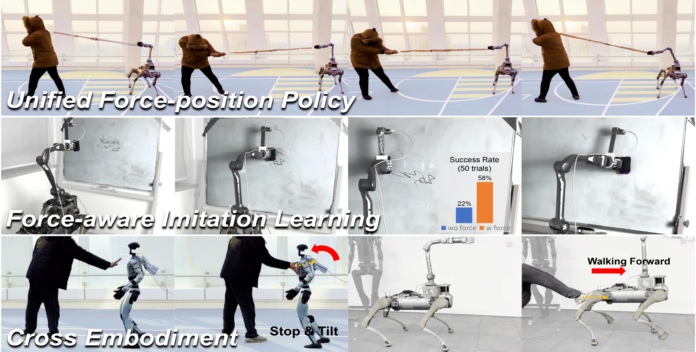
초록
로봇 loco-manipulation에는 환경과의 contact-rich 상호작용이 수반되는 경우가 많으며, 이를 위해서는 contact force와 로봇 position을 함께 모델링해야 한다. 그러나 최근의 시각운동 policy는 position control 또는 force control 중 하나만 학습하는 데 초점을 맞추는 경우가 많아, 이 둘의 공동 학습을 간과한다. 본 연구에서는 force 센서에 의존하지 않고 학습한 force 및 position control을 공동으로 모델링하는, 다족 로봇을 위한 최초의 통합 policy를 제안한다. 다양한 position 및 force 명령 조합을 외부 교란 force와 함께 시뮬레이션함으로써, 과거 로봇 상태로부터 force를 추정하고 position 및 속도 조정을 통해 이를 보상하는 policy를 강화학습으로 학습한다. 이 policy는 다양한 force 및 position 입력하에서 position tracking, force 인가, force tracking, compliant 상호작용을 포함한 광범위한 manipulation 행동을 가능하게 한다. 또한 학습한 policy가 force 추정 모듈을 통해 필수적인 contact 정보를 통합함으로써 trajectory 기반 모방학습 파이프라인을 향상시키며, 네 가지 까다로운 contact-rich manipulation 과제에서 position-control policy보다 성공률이 약 39.5% 더 높음을 보인다. 사족보행 manipulator와 휴머노이드 로봇 모두에서 수행한 실험을 통해 다양한 시나리오에서 제안한 policy의 범용성과 강건성을 검증한다.
키워드: 통합 Force 및 Position Control, Force-aware 모방학습
1. 서론
다족 로봇은 최근 locomotion과 manipulation에서 발전을 이루어 [1, 2, 3, 4], 복잡한 지형(예: 계단)을 횡단하고 적응형 신체 자세를 통해 작업공간을 확장할 수 있게 되었으며, 이에 따라 loco-manipulation에 대한 관심이 다시 높아졌다 [5, 6, 7, 8]. 그러나 다족 manipulator는 복잡한 운동학적 구조로 인해 제어하기 어렵다. contact-rich manipulation 과제에서는 원하는 제어 행동(예: compliance)에 contact force의 정확한 모델링이 필수적이지만 force 감지 하드웨어가 없어 이를 수행하기 어렵기 때문에, 이러한 난점은 더욱 심해진다. 이와 같은 과제는 효과적인 로봇-환경 및 인간-로봇 상호작용을 지원하기 위한 강건하고 적응 가능한 policy의 필요성을 부각한다.
다족 manipulator의 제어 문제를 해결하기 위해 강화학습 알고리즘은 전통적 제어 방법의 효과적인 대안으로 부상했으며, domain randomization을 통해 학습된 강건하고 일반화 가능한 policy를 제공한다 [6, 7, 8, 9, 2, 10]. 이러한 policy는 복잡한 과제에서 locomotion과 manipulation을 통합하지만, 주로 정밀한 position control에 의존하므로 contact-rich 시나리오에 적용하는 데 한계가 있다. 이러한 의존성은 position 기반 로봇 모방학습의 부상도 촉진했으며 [11, 12, 13, 14, 15], 대규모 데이터셋 [16, 13, 17, 18]은 로봇 trajectory에만 초점을 맞추고 force 감지가 없다는 이유로 중요한 contact 정보를 누락한다. 4.2절에서 보이듯, 이처럼 trajectory만으로 이루어진 데이터는 기본적인 contact-rich 과제(예: 칠판 닦기)에서조차 효과적인 policy를 학습하기에 불충분하다. 이는 position control의 한계를 드러내며, 더 효과적인 과제 수행을 위해 학습 기반 policy에 force 감지와 모델링을 통합해야 할 필요성을 강조한다.
앞서 언급한 과제와 관찰에 비추어, 본 연구에서는 force 센서 없이 force 및 position control을 매끄럽게 통합하는 다족 로봇용 최초의 통합 policy를 제안한다. force 및 position control을 독립적으로 처리하는 기존 방법 [9]과 달리, 본 연구에서는 다양한 position 및 force 명령 조합을 외부 교란 force와 함께 시뮬레이션하여 Isaac Gym [19]에서 강화학습으로 단일 제어 policy를 학습한다. 이 policy는 force 추정기를 활용하여 로봇의 과거 상태와 목표 position에 대한 offset을 바탕으로 외부 force를 예측함으로써, 로봇의 position과 속도를 적응적으로 조정할 수 있게 한다. 학습한 policy는 다양한 force 및 position 입력에 대한 position tracking, force 인가, force tracking, compliant 응답을 포함하는 다채로운 manipulation 행동을 지원한다. 또한 Unitree B2-Z1 사족보행 manipulator 플랫폼과 Unitree G1 휴머노이드 로봇 모두에서 7개 과제에 걸친 광범위한 실험을 수행하여, 이 학습 프레임워크가 서로 다른 로봇 embodiment에 일반화될 수 있음을 검증한다.
아울러 학습한 policy가 contact force 정보를 포함한 모방학습을 촉진하는 역량을 부각한다. 구체적으로, 학습한 policy를 기본 원격조작 policy로 활용하여 position 및 force 명령을 로봇에 동시에 전달하는 한편, 내장된 contact force 추정기를 통해 contact-rich manipulation 데이터를 수집하는 force-aware 데이터 수집 파이프라인을 개발한다. 추정 force를 position 기반 모방학습 policy에 통합하여 이 데이터의 효과를 검증하며, 그 결과 세 가지 까다로운 contact-rich 과제 전반에서 기본 position 기반 방법보다 성공률이 크게 향상(약 39.5%)된다. 이러한 실험 결과는 특히 명시적인 force 센서가 없는 상황에서, 학습한 policy가 contact-rich 로봇 상호작용 데이터를 구축하기 위한 범용 프레임워크로 활용될 잠재력을 강조한다.
전반적인 기여는 다음과 같이 요약할 수 있다.
- 다족 loco-manipulation에서 통합 force 및 position control을 학습하는 최초의 모델을 제안하며, 단일 policy로 position tracking, force control, compliance와 같은 다양한 제어 행동을 가능하게 한다.
- 사족보행 manipulator와 휴머노이드 로봇에서 수행한 7개 실험을 통해, 다양하고 까다로운 과제 시나리오 전반에서 학습한 policy의 효과와 강건성을 입증한다.
- 학습한 force 추정기를 사용하는 force-aware 로봇 모방학습 데이터 수집 파이프라인을 개발하여, 세 가지 까다로운 contact-rich manipulation 과제에서 position 기반 모방학습 baseline을 약 39.5% 향상시킨다. 이는 contact-rich 과제 시연 데이터를 구축하기 위한 범용적이고 효율적인 프레임워크로서 본 policy가 지닌 가능성을 보여준다.
2. 관련 연구
Whole-body Control
Whole-body control은 특히 고전적 제어 프레임워크 내에서 mobile manipulation의 로봇 역량을 향상하기 위해 널리 채택되어 왔다 [20, 21, 5]. 최근에는 병렬 시뮬레이터를 사용하는 강화학습 [19, 22]이 다족 로봇의 복잡한 제어 문제를 해결하는 주류 접근법이 되었다. 여러 학습 기반 방법 [6, 23, 24, 7, 25]은 whole-body control의 강건성을 향상했으며, 다른 연구들은 이를 force 집약적 과제로 확장했다 [26, 27, 28, 29, 30]. 예를 들어, [27]는 밀기 과정에서 충분한 force를 인가하도록 관절 움직임을 조정하며, ALMA [29]는 whole-body control과 force control을 결합하여 정밀한 end-effector 구동을 달성한다. [30]는 Cartesian impedance control을 QP 정식화에 통합하여, 이중 질량-댐퍼-스프링 모델을 통해 compliant loco-manipulation을 가능하게 한다. 이 연구들은 전체적으로 force 및 position control을 통합하는 whole-body control의 효과를 보여준다.
Hybrid Force 및 Position Control
contact-rich manipulation 과제에서는 force와 position 사이의 본질적인 결합으로 인해 end-effector trajectory control에만 의존하는 것으로는 충분하지 않은 경우가 많다. impedance control의 도입 [34]을 포함한 초기 연구 [31, 32, 33, 34]는 hybrid force-position 전략의 토대를 마련했다. 최근 연구 [1, 35, 36, 37, 9]는 compliance control을 발전시켰으며, 일부는 force 센서를 활용하고 다른 일부는 내부 신호나 강화학습을 통해 force를 간접적으로 추정한다. 이러한 흐름에서 영감을 받아, 본 연구는 강화학습으로 사족보행 로봇이 force와 position을 동시에 제어하도록 학습함으로써 force 센서의 필요성을 제거한다. 이는 서로 다른 명령 구성을 통해 force following, impedance control, hybrid 모드 사이를 유연하게 전환할 수 있게 한다.
Mobile Manipulation을 위한 모방학습
모방학습 [38, 39, 40, 41, 42]은 최근 로봇이 다양한 과제를 수행하도록 학습시키는 주요 접근법이 되었다. 행동 복제 [43, 44]는 전문가 시연의 관측-action 쌍을 지도학습하여 policy를 학습하는 간명한 모방학습 방법이다. 이미지 데이터와 고유수용성 감지 [45, 46, 47, 8]를 활용하여 로봇 제어 명령을 생성하는 연구들은 mobile manipulation 과제에서 괄목할 성공을 보였다. 더 나아가 최근 연구 [48, 49]는 로봇의 감각 역량을 향상하기 위해 촉각 감지를 통합하기 시작했다. 이와 마찬가지로 본 연구는 force 센서에 의존하지 않고 force 입력을 활용하며, 로봇이 까다로운 과제를 효과적으로 완수하도록 하는 데 force 정보가 핵심적임을 보인다.
3. 방법
3.1 Force 및 Position Control을 위한 통합 정식화
먼저 본 접근법의 일반적인 문제 정식화를 소개한다. 그림 2(c)의 상단에 보인 것처럼, 로봇 body frame에 상대적인 position 명령과 force 명령 𝐱^cmd 및 𝐅^cmd가 주어졌을 때, 본 연구의 목표는 순 force 𝐅가 작용하는 상황에서 로봇의 행동이 이러한 명령을 따르도록 보장하는 강화학습 policy를 학습하는 것이다.
이 목표를 달성하기 위해 다음의 impedance control 정식화를 채택한다.
F = K(x − x_des) + D(ẋ − ẋ_des) + M(ẍ − ẍ_des)(1)여기서 𝐱는 로봇의 실제 position을 나타낸다. 𝐱^des, ẋ^des, ẍ^des는 각각 로봇의 원하는 목표 position, 속도, 가속도를 나타낸다. 매개변수 K, D, M은 각각 강성 계수, 감쇠 계수, 등가 질량(관성)에 해당한다.
End-effector 모델링
manipulation 과제에서 end-effector는 일반적으로 느리게 이동하므로, 식 (1)을 다음과 같이 단순화할 수 있다.
𝐅 = K(𝐱 − 𝐱^des).
순 force 𝐅는 주로 세 가지 성분, 즉 능동 force 𝐅^cmd, 𝐅^cmd를 환경에 인가함으로써 발생하는 수동 반력 𝐅^react, 그리고 추가적인 외부 교란 𝐅^ext로 구성된다. 따라서 end-effector의 원하는 목표 position 𝐱^target은 다음과 같이 주어진다.
x_target = x_cmd + [F_ext + (F_cmd − F_react)] / K(2)여기서 환경의 반력은 end-effector가 명령된 position 𝐱^cmd에 도달하지 못하게 한다. 식 (2)의 정식화에서는 position 명령 𝐱^cmd와 force 명령 𝐅^cmd를 적절히 지정함으로써 Position Control, Force Control, Impedance Control, Hybrid Position and Force Control을 포함한 여러 manipulation 행동을 도출할 수 있다. 이러한 제어 행동의 상세한 정식화는 부록 A에 제시한다. position 명령, force 명령, 외부 교란이 동시에 존재하는 복잡한 시나리오에서 시스템은 식 (2)을 따르며, 이러한 기본 제어 모드를 통합한다.
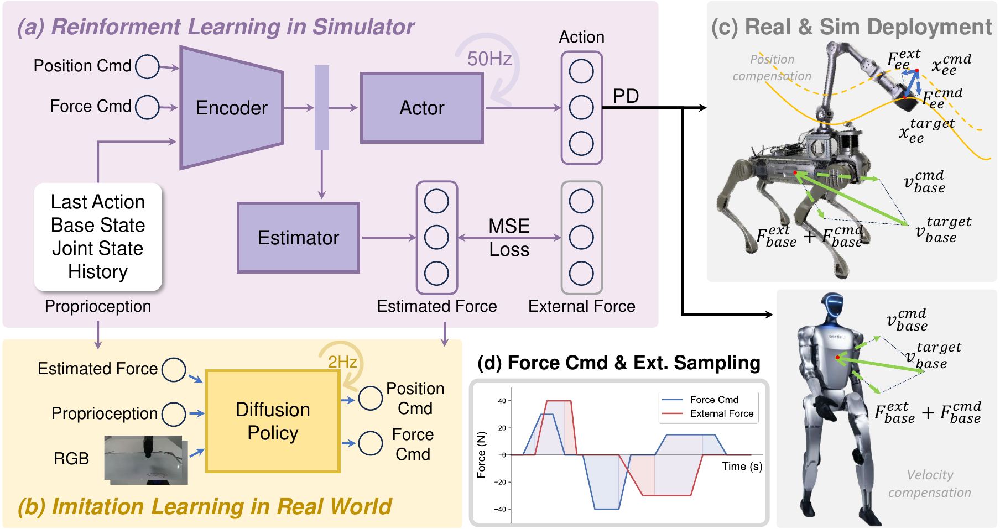
다중 contact 모델링. End-effector 이외의 다른 robot body part에 대해서도 식 (2)의 정식화를 그에 맞게 확장할 수 있다. Robot base를 예로 들면, 일반적으로 base의 joint state가 아니라 velocity 또는 global position에 관심을 둔다. 이러한 경우 robot이 base velocity 명령으로 control된다고 가정하여 식 (2)을 단순화할 수 있다. 구체적으로 velocity 및 force 명령 v_base^cmd = ẋ_base^cmd와 F_base^cmd, 그리고 외란 F_base^ext가 주어지면 식 (1)로부터 다음을 도출할 수 있다.
F_base = D(ẋ_base − ẋ_base,des) = D(v_base − v_base,des)(3)Base의 global position을 이용할 수 없으므로 position 항은 생략한다. 여기서 F_base = F_base^ext + (F_base^cmd − F_base^react)는 net force이며, 식 (2)을 다음과 같이 변환한다.
v_base,target = v_base,cmd + [F_base,ext + (F_base,cmd − F_base,react)] / D(4)이 변환 후에는 식 (4)에서 도출한 식을 사용하여 유사한 기본 control mode를 구현할 수 있다. 더 나아가 robot base에 작용하는 net force F_base를 end-effector에 대한 외력 F_base2ee로 변환하거나 그 반대로 변환함으로써, body part에 대한 외란과 force 명령을 end-effector로 변환하는 상황까지 이 정식화를 확장할 수 있다. 그러나 이러한 방법은 학습 복잡도가 높으므로, 본 연구에서는 end-effector와 robot base를 독립적으로 취급하는 데 초점을 맞추며 통합된 유도는 중요한 향후 연구로 남긴다.
요약하면, 능동 force와 수동 force를 모두 고려하여 legged robot의 end-effector 및 base 동작을 모델링하는 식 (2)과 식 (4)에 따라 reward를 제공하여 policy를 학습한다. 자세한 학습 설정과 모델은 3.2절에서 제시한다.
3.2 통합 Force-Position Control Policy 학습
먼저 observation, command, action 공간을 정의하여 제안한 통합 force-position control policy의 학습 과정을 상세히 설명한다.
구체적으로 robot의 observation o_t는 robot의 base orientation g_t^base, angular velocity ω_t^base, joint position q_t, joint velocity q̇t, 이전 action a{t−1}, command c_t^cmd, 그리고 foot clock timing θ_t^feet로 다음과 같이 정의한다.
o_t = [g_t^base, ω_t^base, q_t, q̇_t, a_(t−1), c_t^cmd, θ_t^feet](5)여기서 입력 command c_t^cmd = [v_base^cmd, x_ee^cmd, F_ee^cmd, F_base^cmd]는 base velocity, end-effector position, end-effector force, base force 명령을 포함한다. Quadrupedal robot에서는 네 가지 command 유형을 모두 고려한다. Humanoid robot에는 manipulation task에 사용할 gripper가 없으므로 locomotion command v_base^cmd와 base force command F_base^cmd만 고려한다. 출력 action a_t는 사전에 정의한 default pose에 더하는 residual이며, PD controller의 joint position target q_t^target은 다음과 같이 계산한다.
q_t^target = σ_a a_t + q^default,
여기서 σ_a는 policy 출력을 scaling하고 q^default는 표준 pose를 나타낸다.
Policy 설계. Policy 모델의 개요는 그림 2(a)에 제시한다. Policy 모델은 observation encoder, state estimator, actor의 세 module로 구성된다. Encoder는 observation history o_[t−H, …, t−1, t] (H = 32)를 처리하여 latent feature를 출력하고, 이 feature는 state estimator와 actor로 전달된다. 이어서 state estimator는 외력 F = F^ext + F^react, end-effector position, base velocity를 포함한 robot state를 예측한다. 이렇게 추정한 force는 원하는 특정 control 동작에서 command signal로 변환할 수 있다.
Force 시뮬레이션. 통합 force-position policy를 학습하기 위한 다양한 상황을 시뮬레이션하기 위해 식 (2)과 식 (4)에서 요구하는 position, velocity, force 명령과 외부 net force를 무작위로 샘플링한다. 입력 command와 외력의 범위는 부록 C.1에 자세히 제시한다. 특히 reaction force F^react는 명시적으로 모델링하지 않고 net external force F = F^ext + F^react에 포함한다.
x^cmd의 샘플링 범위는 whole-body movement가 없을 때 arm의 원래 workspace를 약간 넘도록 설정하되, whole-body motion을 허용할 때 산출되는 x_ee^target이 operation limit 안에 유지되도록 한다.
학습 중에는 그림 2(d)에 나타난 것처럼 샘플링한 force를 target 값까지 선형적으로 증가시키고, 고정된 구간 동안 일정하게 유지한 뒤, 사전에 정의한 schedule에 따라 다시 0까지 감소시킨다. 짧은 zero-force 구간이 지난 후 새로운 force를 샘플링하고 이 cycle을 반복한다. 이 샘플링 전략은 policy를 다양한 control 조건에 노출하며, 3.1절에서 논의한 서로 다른 원하는 control 동작을 반영하여 하나의 policy가 다양한 control task 요구에 적응할 수 있게 한다.
Policy 학습. 두 단계의 학습 절차를 채택한다. 먼저 whole-body reaching과 locomotion에 초점을 맞춘 뒤, 무작위 force 명령과 외란을 도입한다. 부록 C에서 추가로 분석하듯이, 이 단계적 접근법은 경험적으로 단일 단계 설정보다 더 안정적인 학습 결과를 낸다. 다양한 입력과 외란 조합에서 target end-effector position x_ee^target 및 base velocity v_base^target을 정확히 추종하면 reward를 부여하여 policy 학습을 지도한다. 또한 robot state와 외력 모두에 대한 state estimator의 정확도를 개선하기 위해 MSE loss를 사용한다. 전체 reward 명세는 표 A.1에 제시한다.
3.3 Force-aware 모방학습
실제 manipulation task에서 force 정보가 중요하지만 기존 dataset 대부분에는 이 정보가 없다는 점을 고려하여, 학습한 force-position policy를 활용해 imitation learning을 위한 force-aware 데이터를 수집한다. 구체적으로 robot을 teleoperation하여 joint state, base state, control command, 추정된 end-effector contact force, 그리고 end-effector와 robot base 각각에 장착한 camera의 RGB image를 기록한다. 이 데이터는 robot state, 추정 force, image observation을 입력으로 받고 force 명령과 end-effector position 명령을 모두 예측하여 low-level force-position policy의 입력으로 제공하는 diffusion 기반 force-aware imitation learning policy를 학습하는 데 사용한다. 시각 입력에만 의존하는 선행 연구와 달리, 본 force estimator는 policy에 contact 정보를 보충하여 더욱 정확한 object 상호작용과 force 인가를 가능하게 한다. 수집한 데이터의 영향과 본 접근법의 효과는 4.2절에서 검증한다. Teleoperation pipeline과 학습 절차의 세부사항은 각각 부록 B와 부록 D에 제시한다.
4. 실험
4.1 Force 및 Position 명령 추종
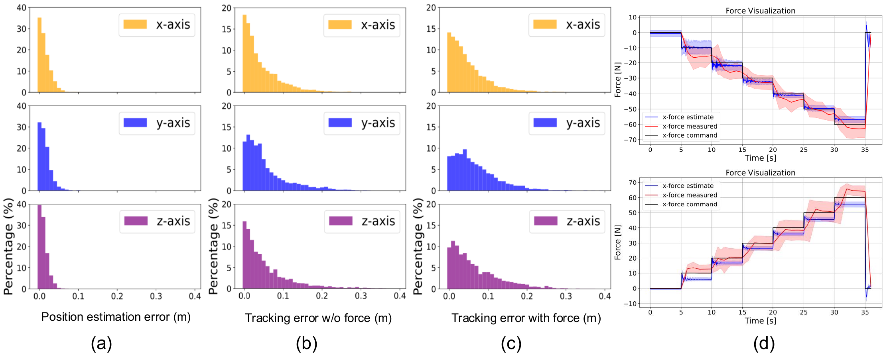
Position 추종. 시뮬레이션에서의 성능을 평가하기 위해, 전체 학습 workspace를 포괄하도록 position 명령만으로 무작위 생성한 end-effector trajectory를 사용하여 6000-step rollout을 수행한다. 이 trial들에 걸친 평균 position 추종 오차와 추정 오차를 보고한다. 그림 3(b)에 나타난 바와 같이, 외력과 force 명령이 없을 때 end-effector 추종 오차는 대부분 0.1m 이내로 유지된다. Y축에서는 오차가 약간 더 크게 관찰되는데, 이는 해당 방향에서 사용할 수 있는 자유도가 더 적어 정밀도가 제한되기 때문인 것으로 보인다. 또한 추정된 end-effector position을 시뮬레이션의 ground-truth 값과 비교하여 상태 추정기의 정확도를 평가한다. 그림 3(a)에 나타난 바와 같이, 모든 축에서 추정 오차는 0.05m 이내로 유지된다.
Force control. 두 가지 설정에서 제안한 policy가 force를 추정하고 force에 따라 동작하는 능력을 평가한다. 먼저 policy가 가해진 외력과 일치하는 force 명령을 받을 때 position 추종 성능을 평가하며, 이를 통합 force-position control을 평가하기 위한 간접 평가로 사용한다. 그림 3(c)에 나타난 바와 같이, 외력이 없는 실험과 비교하면 추종 오차가 force가 없는 설정보다 약간 증가하지만 대부분 0.1m 이내로 유지되어, 효과적인 force-aware 동작을 입증한다. 둘째, 0 N부터 60 N까지의 force 명령을 가하고 동력계를 사용해 end-effector force를 측정함으로써 실제 로봇에서 직접적인 force control 평가를 수행한다. 서로 다른 5개의 end-effector position에서 측정한 결과, 그림 3(d)에 나타난 바와 같이 평균 오차는 10 N 이내이다. 6개의 이산적인 force 수준에 대한 force 추정에서는 5–10 N의 오차가 나타난다. 하드웨어 한계로 인해 Y축과 Z축에 대한 평가는 40 N으로 제한한다. 특히 Y축에서 경미한 sim-to-real 불일치가 존재함에도, 추정기는 대상 manipulation task에 충분한 정확도를 유지한다. 더 자세한 분석은 부록 E에서 제공한다.
4.2 Force-aware 모방학습
Task 설정. Hybrid force-position control과 force sensing이 필요한 네 가지 실제 task인 wipe-blackboard, open-cabinet, close-cabinet, open-drawer-occlusion에서 본 방법을 평가한다. wipe-blackboard task에서 로봇은 잉크 자국을 지우기 위해 표면과 지속적으로 contact를 유지하면서 측면으로 움직여야 한다. 50개의 trajectory를 수집하고 force-aware diffusion policy를 30k step 동안 학습한다. open-cabinet과 close-cabinet에서는 로봇이 눌러서 여는 캐비닛과 상호작용하며, open-drawer-occlusion에서는 시각 관측에서 점차 가려지는 서랍을 연다(설정은 그림 A.8 참조). 세 가지 열기/닫기 task 각각에 대해 task당 30개의 episode를 수집하고 policy를 20k step 동안 학습한다.
Baseline으로 학습된 low-level policy를 배포하되, teleoperation 데이터 수집 중에는 force 추정기와 force 명령 신호를 제외한다. 각 task는 50회 수행하며, 성공적인 완료를 위해 각 trial은 최대 1000 step(약20 seconds)으로 제한한다. 완전성을 위해 task 정의와 실험 설정에 관한 추가 세부사항을부록 D에 제공한다.
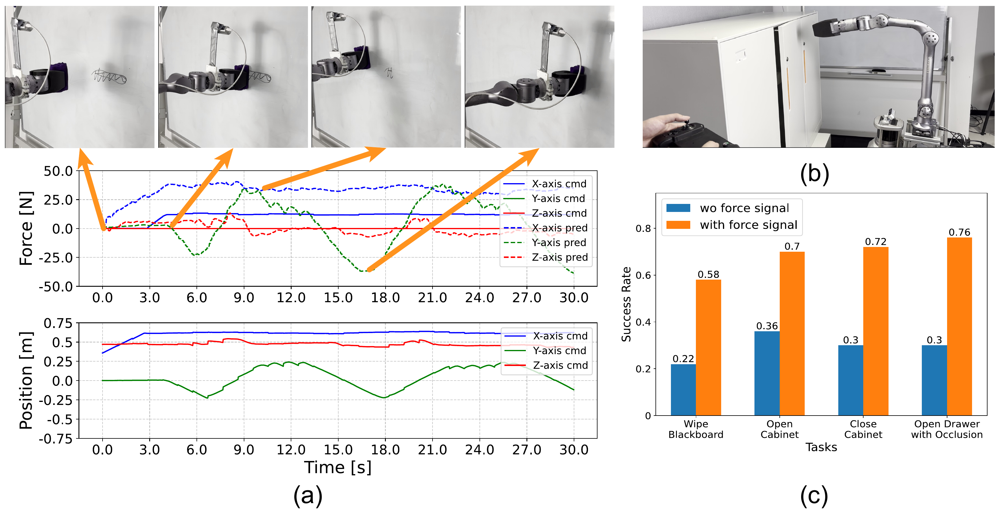
결과 및 분석. 그림 4에서 네 가지 실제 task에 대해 본 방법을 baseline과 비교한다. 본 접근법은 baseline보다 약39.5% 더 높은 성공률을 달성한다.
wipe-blackboard에서 position-only policy는 안정적인 contact를 유지하지 못하며, 그 결과 닦기가 불충분하거나 과도한 force로 인해 표면이 손상될 위험이 자주 발생한다. 반면 본 force-aware policy는 일관된 contact pressure를 보장하며, low-level policy는 compliance를 향상하고 기계적 stress를 줄인다.
open- 및 close-cabinet에서 주된 과제는 눌러서 여는 메커니즘의 좁은 3mm stroke에 있으며, 이는 vision만으로 감지하기 어렵다. 본 force 추정기는 필요한 contact force를 정확히 감지하여 메커니즘을 안정적으로 작동시킨다. open-drawer-occlusion에서 시각 단서에만 의존하는 baseline policy는 관측할 수 없는 contact로 인해 성공률이 0.3까지 급격히 하락한다. 본 방법은 force sensing을 활용하여 가림 상황에서 contact를 감지함으로써 성공률을 0.76으로 높이며, vision이 제한된 상황에서 force 추정의 중요성을 부각한다. 모든 정량적 비교와 추가 세부사항은 부록 D에 제공한다.
4.3 기본 Manipulation Policy
Force control. Force control은 가해진 force와 명령 force가 일치할 때까지 end-effector를 force 방향으로 움직여 명령된 force를 직접 가한다. 본 통합 전략은 추가 학습을 필요로 하지 않으며, 식 (A.2)에 따라 추정된 외력과 force 명령의 합이 평형에 도달할 때까지 변위 보상을 결정한다. 그림 5(a)와 supplementary video에 나타난 바와 같이, 2.5 kg dumbbell을 end-effector에 부착하면 로봇은 25 N의 상향 force 명령으로 균형을 달성한다. 그러나 이 명령이 없으면 dumbbell의 중력으로 인해 end-effector가 내려간다.
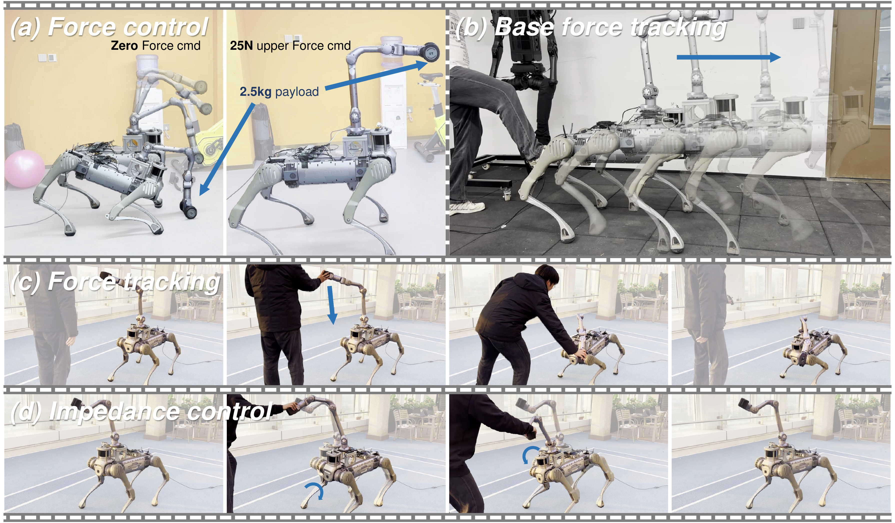
Force 추종. Force 추종은 end-effector가 zero-force 명령을 추종하는 force control의 특수한 경우이다. 외력이 가해지면 end-effector는 force 방향으로 움직인다. Force가 제거되면 원래 target으로 돌아가는 대신 이동한 position에 머문다. 이 동작은 식 (A.4)에 따라 본 통합 policy를 사용하여 구현한다. 그림 5(c)와 supplementary video에 나타난 바와 같이, force 명령을 0으로 설정하여 이 기능을 시연한다. 이 경우 end-effector는 외력을 따라 움직이고 force가 제거된 후에도 이동한 position에 남아 효과적인 force 추종을 달성한다.
Impedance control. Force control의 핵심 응용 중 하나는 impedance control이며, 이때 end-effector는 spring-mass-damper system의 dynamics를 따르면서 외력에 compliant하게 반응하는 동시에 target position을 추종한다. 식 (A.3)에 따라 통합 policy를 사용해 impedance control을 구현한다. 그림 5(d)와 supplementary video에 나타난 바와 같이, 인간-로봇 줄다리기와 팔씨름 상황에서 이 기능을 시연한다. 이 task들에서는 end-effector가 target position에서 더 멀리 벗어날수록 로봇이 가하는 저항력이 더 커져 impedance 동작을 보여준다.
4.4 서로 다른 Embodiment에서의 성능
통합 policy의 cross-embodiment 능력을 검증하기 위해 Unitree G1 humanoid robot과 Unitree B2-Z1 quadrupedal manipulator에서 이를 시험한다. Locomotion의 경우 force 보상이 end-effector에 직접 적용되는 manipulation task와 달리, 식 (4)에 따라 외력을 보상하도록 로봇의 base velocity를 조정한다.
그림 1의 세 번째 행에 나타난 바와 같이, 보상 velocity의 크기가 velocity 명령과 같고 방향이 반대이면 humanoid robot은 멈추고 균형을 유지하기 위해 몸을 기울인다. 마찬가지로 그림 5(b)에 나타난 바와 같이, quadrupedal robot은 force와 velocity 명령이 모두 0인 상태에서도 발로 차이면 앞으로 걷기 시작한다.
5. 결론
Legged robot을 위한 통합 force-position control policy를 제안하며, 이를 통해 명시적인 force sensor 없이 contact-rich loco-manipulation task를 수행할 수 있다. 본 policy는 reinforcement learning을 사용하여 과거 state로부터 외력을 추정하고 position 및 velocity 조정을 통해 이를 보상한다. 이 접근법은 position 추종, force 인가, compliance와 같은 다양한 동작을 지원한다. 또한 force 추정을 imitation learning에 통합하면 contact-rich 환경에서 task 성공률이 향상된다. Quadrupedal robot과 humanoid robot에서 수행한 실험은 실제 환경에서 policy의 적응성과 강건성을 검증한다.
6. 한계 및 향후 연구
첫째, policy는 직접적인 force sensing 없이 외력을 성공적으로 추정하지만, 고주파 상호작용과 로봇 workspace의 경계에서는 정확도가 저하되는 경향이 있다. 향후 연구에서는 이러한 corner case에서 force 추정을 개선하는 데 초점을 맞출 수 있다. 가능한 한 가지 방향은 식 (2)의 velocity 및 acceleration 항을 통합하여 force 추정을 향상하는 것이며, 이를 통해 모델이 동적 상호작용을 더 잘 포착하도록 할 수 있다.
둘째, 본 policy는 시뮬레이션에서 실제 환경 배포로 잘 일반화되지만, 특히 서로 다른 좌표축에서의 force 정확도와 관련하여 sim-to-real gap으로 인한 불일치가 남아 있다. 이러한 차이는 시뮬레이션과 실제 하드웨어 간 actuator dynamics 및 contact modeling의 불일치에서 비롯된 것으로 보인다. 향후 연구에서는 다양한 실제 조건 전반에서 강건성을 향상하기 위해 domain randomization 및 real-to-sim correction과 같은 기법을 탐구할 수 있다.
또한 현재 framework는 주로 단일 상호작용 지점에서 force를 추정하는 데 초점을 맞춘다. 향후 연구에서는 다중 지점 force 추정과 whole-body force 상호작용 task를 탐구할 수 있다. 예를 들어 quadrupedal robot이 무거운 문을 여는 상황에서 로봇은 몸으로 문을 받치는 동시에 manipulator를 사용하여 손잡이를 아래로 누를 수 있다. 서로 다른 신체 부위에 걸친 여러 contact force를 조정하는 policy를 개발하면 더 복잡하고 효과적인 실제 상호작용이 가능해질 수 있다.
부록 A. 문제 정식화
본 policy는 다양한 force 및 position 입력에서 position control, force control, impedance control, hybrid position-force control을 포함한 폭넓은 manipulation 동작을 가능하게 한다. 식 (2)의 정식화로부터 다음과 같은 기본 manipulation policy를 쉽게 유도할 수 있다.
- a) Position control: 외부 외란이나 능동 force 명령이 가해지지 않을 때 식 (2)은 다음과 같이 된다.
x_target = x_cmd(A.1)여기서 target end-effector position x^(target)은 명령된 position x^(cmd)에 도달해야 한다.
- b) Force control: 환경과 contact한 상태에서 외부 외란 없이 force
F^(cmd)를 가할 때, end-effector의 desired goal position은 식 (2)에 따라 다음과 같이 정의된다.
x_target = x_cmd + (F_cmd − F_react) / K(A.2)시스템 실행 중 reaction force F^(react)는 force 명령 F^(cmd)과 일치할 때까지 점진적으로 증가하며, 최종 target pose는 x^(target)_(final) = x^(cmd)가 된다.
- c) Impedance control: end-effector가 외부 외란 force를 받지만 환경에는 force를 가하지 않을 때 식 (2)은 다음과 같이 단순화된다.
x_target = x_cmd + F_ext / K(A.3)여기서 end-effector는 외부 외란을 받을 때 position을 조정하여 외력 F^(ext)에 대해 compliance를 나타낸다. 특히 다음과 같이 position 명령 x^(cmd)을 동적으로 조정함으로써 식 (A.3)을 사용해 force 추종과 중력 보상도 구현할 수 있다.
Δx_cmd = F_ext / K(A.4)여기서 F^(ext)는 중력 항 또는 외력일 수 있다.
- d) Hybrid position-force control: [31]에서 정의한 바와 같이, hybrid position-force control은
x^(cmd)을 사용해 end-effector의 움직임을 제어하는 동시에 움직임의 접선 방향에 수직인 force 명령F^(cmd) = F^(cmd)_(⊥)를 가하는 것을 의미한다. 이 시나리오에서 시스템은 force 명령이 없는 접선 방향을 따라 식 (A.1)을 따르고, force 명령이 활성화된 수직 방향에서는 식 (A.2)을 만족한다.
단순화된 impedance 모델. 본 정식화에서는 damping 항과 inertia 항을 생략한다. 이러한 단순화는 움직임이 느리고 normal force가 contact를 보장하는 비교적 정적인 또는 준정적인 task(예: 닦기 또는 줄다리기)에 적합하다. 이러한 경우에는 정적 모델로 충분하다. 동적이거나 민첩한 skill에는 더 높은 control 주파수와 명시적인 velocity/acceleration 항이 필요하며, 향후 연구에서 이를 탐구할 계획이다.
Rigid contact 가정. 본 정식화 F = K(x - x^(des))은 rigid object와 compliant object를 모두 자연스럽게 처리한다. 이는 물체의 stiffness와 무관하게 end-effector position이 net force F와 desired goal position x^(des)에만 의존하기 때문이다. Rigid contact에서는 작은 변위가 필요한 force를 생성하는 반면, soft object에서는 force 평형에 도달할 때까지 더 큰 변형이 발생한다.
부록 B. 하드웨어 설정 및 Teleoperation 시스템
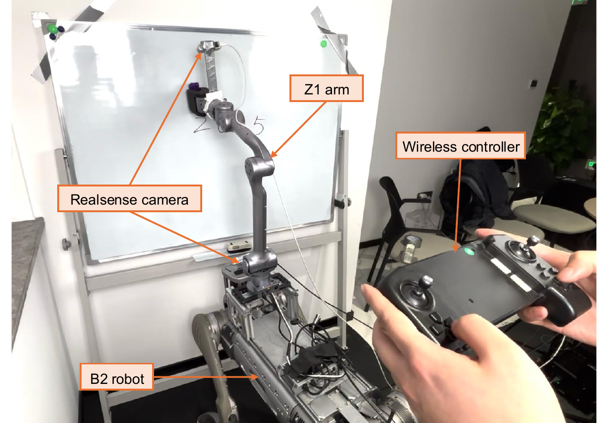
(a)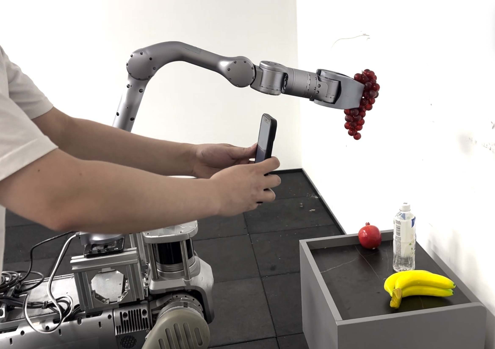
(b)로봇 시스템 설정. Humanoid robot 시스템(그림 2)은 29-DOF Unitree G1 로봇이다. Quadruped robot 시스템(그림 A.6)은 12-DOF Unitree B2 로봇과 6-DOF Unitree Z1 robot arm으로 구성되며, 둘 다 B2의 battery로 구동된다. Quadruped robot의 arm과 head에 장착한 두 대의 RealSense camera를 맞춤 구성한다. 본 whole-body controller와 diffusion policy 추론은 RTX 3090 GPU가 탑재된 전용 desktop에서 실행되며, internet 연결을 통해 B2-Z1 로봇과 interface한다.
Teleoperation 시스템. 그림 A.6에 나타난 바와 같이, position control만 필요한 manipulation task에는 iPhone을 사용해 로봇을 유연하게 teleoperation할 수 있는 MuJoCo AR 애플리케이션을 활용한다. 그러나 그림 A.6에 나타난 바와 같이 이 접근법은 hybrid force-position control이 수반되는 manipulation task에는 더 이상 적합하지 않다. 이를 해결하기 위해 B2 로봇의 내장 wireless controller에 기반한 전용 teleoperation 시스템을 개발했다. 이 시스템에서는 두 개의 joystick으로 로봇의 base 움직임을 제어하고, 아래쪽의 버튼 여덟 개를 end-effector position과 gripper의 열림/닫힘 제어에 매핑한다. 또한 “L1” 버튼을 누르고 있으면 시스템이 end-effector에 position 명령을 내리는 모드에서 force 명령을 내리는 모드로 전환된다.
실제로 이 설정을 사용한 데이터 수집은 주로 teleoperation의 제한된 bandwidth 때문에 비교적 느렸으며, 예를 들어 닦기 trial당 약 20초, 캐비닛 trial당 약 10초가 걸렸다. Force feedback을 제공하는 exoskeleton 기반 teleoperation이 forceful manipulation을 위한 demonstration을 수집하는 데 더 자연스럽고 효율적인 방법을 제공할 것으로 보며, 향후 연구에서 이 방향을 탐구할 계획이다.
부록 C. Reinforcement Learning을 사용한 Policy 학습의 세부사항
Actor policy를 학습하기 위해 PPO [50]를 사용하고, state prediction 출력을 위한 MLP network로 state estimator를 구현한다. 4096개의 병렬 환경을 갖춘 Isaac Gym [19]에서 RL policy를 학습한다.
C.1 입력 명령 및 외란 Force
학습 중에는 아래 범위 내에서 입력 명령과 외란 force를 sampling한다.
- Body frame 내 구면좌표계의 end-effector position 명령
x^(cmd)_(ee) = left(r^(cmd), θ^(cmd), φ^(cmd)right)이며, 각 범위는 다음과 같다.
r^(cmd) ∈ [0.35, 0.85 m],
θ^(cmd) ∈ [-0.4π, 0.4π rad],
φ^(cmd) ∈ [-0.6π, 0.6π rad].
- Body frame 내 데카르트 좌표계의 end-effector force 명령
F^(cmd)_(ee) ∈ ℝ^(3): [-60 N, 60 N].
- Base velocity 명령
v^(cmd)_(base) = left(v^(cmd)_x, v^(cmd)_y, ω^(cmd)_zright)이며, 각 범위는 다음과 같다.
v_x ∈ [-0.8, 0.8 m/s],
v_y ∈ [-0.6, 0.6 m/s],
ω_z ∈ [-0.8, 0.8 rad/s].
- Body frame 내 base force 명령
F^(cmd)_(base) ∈ ℝ^(3): [-60 N, 60 N].
- 환경이 end-effector에 가하는 외부 net force
F_(ee) ∈ ℝ^(3): [-60 N, 60 N]이며, robot base에서는 F_(base) ∈ ℝ^(3): [-60 N, 60 N]이다.
C.2 Reward 및 Domain Randomization
표 A.1는 본 연구에서 사용한 reward 구조를 상세히 개괄하며, 표 A.2는 채택한 domain randomization 방식을 제시한다.
| 항 | 수식 | 가중치 |
|---|---|---|
| End-effector 통합 Position 및 Force Control | ||
| Gripper position | exp(−‖x_ee − [x_cmd + (F_ext + F_cmd − F_react)/B]‖ / 0.5) |
2.0 |
Base 통합 Position 및 Force Control (r_v^b) |
||
| Base velocity | exp(−‖v_base − [v_base,cmd + F_base/D]‖ / 0.25) |
2.0 |
| 안전성 및 Smoothness | ||
| Collision penalty | 1_(collision) |
-5.0 |
| Joint limit | 1_(q>0.8q^(max) or or q<0.8q^(min)) |
-10.0 |
| Torque | ‖tau‖^2 |
-5e-6 |
| Joint velocity | ‖d(q)/dt‖^2 |
-8e-4 |
| Joint acceleration | ‖d²(q)/dt²‖^2 |
-2e-7 |
| Action rate | ‖ a_(t-1)-a_t‖ |
-0.02 |
| Torque limit | 1_(tau>0.9*‖tau^(max)‖) |
-0.005 |
| Gait | ||
| Contact number | Σ[foot]1_tau_(contact)>5.*stance_mask |
2.0 |
| Reference motion | ‖ q-q^(ref)‖^2 |
1.0 |
| 항 | 단위 | 범위 |
|---|---|---|
| Friction | - | [0.3, 2.0] |
| Body mass | kg | [0.0, 15.0] |
| Base COM (x, y, z축) | m | [-0.15, 0.15] |
| Motor strength | % | [85, 115] |
| Gripper payload | kg | [0.0, 0.5] |
| Robot 밀기 | m/s | [0.0, 0.8], interval = 8 s |
C.3 월드 정렬 End-Effector Position 추정
본 estimator는 외력뿐만 아니라 end-effector position과 base linear velocity도 예측한다. Forward kinematics는 arm base에 대한 end-effector의 상대 position을 제공하지만, arm control을 base posture로부터 분리한다. 이와 달리 본 연구에서는 월드 정렬 base frame, 즉 base projection에 대해 height와 orientation이 고정된 frame에서 end-effector position을 추정한다. 예를 들어 이 표현을 사용하면 아래쪽을 향하는 end-effector 명령이 workspace 한계 근처에서 자연스럽게 robot base의 기울어짐을 유발하므로, 명시적인 base control 없이도 조율된 whole-body 동작이 가능하다. 이 frame에서의 end-effector position은 직접 측정할 수 없으므로 대신 이를 추정한다.
C.4 Policy 학습에 관한 추가 분석
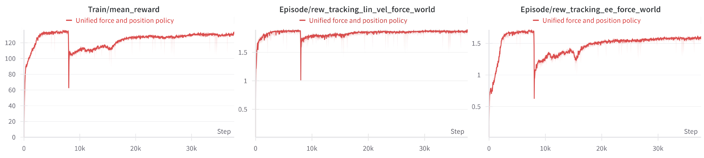
학습 초기에 외부 외란을 도입하면 초기 policy가 body balance와 end-effector 안정성을 유지하는 데 어려움을 겪기 때문에 학습이 까다로워진다. 이를 해결하기 위해 2단계 curriculum을 사용했다. 먼저 whole-body reaching과 locomotion을 학습한 다음, 무작위 force 명령과 외란을 추가했다. 학습 reward 곡선(그림 A.7)은 2단계 초기에 reward가 하락하지만 이후 locomotion은 회복되고 whole-body reaching은 안정화됨을 보여준다. 다만 force 명령과 외란의 sampling 다양성이 증가함에 따라 reaching reward는 소폭 감소한다.
C.5 Motor Gain의 영향
순수한 position 기반 whole-body control과 비교하여 본 연구에서는 더 작은 Kp/Kd gain을 사용한다. 더 큰 overshoot를 허용하는 낮은 gain이 force 추정을 향상한다는 것을 관찰했다. 그러나 값이 지나치게 낮으면 position tracking 정확도가 저하된다.
C.6 Sim-to-Real Gap 및 Force 추정 Robustness
본 force estimator에는 motor dynamics와 contact modeling의 불일치로 인한 sim2real gap이 발생한다. Domain randomization(예: Kp/Kd gain 변화)이 이러한 gap을 줄이는 데 도움이 되지만, RL 기반 policy의 sim2real transfer는 여전히 어렵다. Contact가 많은 task에서 인간이 정밀한 force sensing보다 tactile feedback에 더 의존한다는 점에서 착안하여, 본 IL policy는 추정 force와 visual input을 결합함으로써 높은 force 정확도를 요구하지 않고도 robust한 성능을 달성한다. Sim2real gap을 더욱 줄이기 위해 향후 real-world data로 estimator를 fine-tuning하고 system identification 방법을 적용할 계획이다.
부록 D. Force-aware 모방학습 Policy의 세부사항
| Task | wipe-blackboard |
open-cabinet |
close-cabinet |
open-drawer-occlusion |
|---|---|---|---|---|
| Force 없음 | 0.22 | 0.36 | 0.30 | 0.30 |
| Force 있음 | 0.58 | 0.70 | 0.72 | 0.76 |
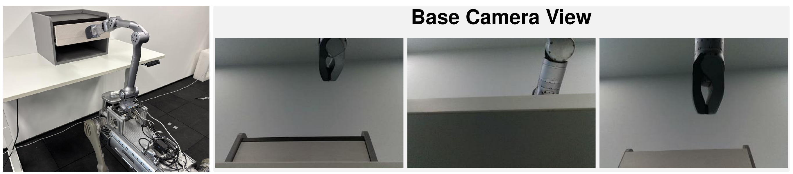
Task 설정. 실제 환경에서 hybrid force-position control과 force sensing 능력의 조합이 필요한 네 가지 task를 선정한다.
wipe-blackboardtask에서 로봇은 잉크 자국을 효과적으로 제거하기 위해 칠판을 누르면서 측면으로 움직여야 한다. 로봇이 contact를 잃거나 움직이는 동안 충분한 force를 가하지 못하면 잉크가 지워지지 않는다. Position control만 사용하는 접근법은 일관된 contact force를 유지하는 데 어려움을 겪으며, 흔히 contact가 간헐적으로 끊기거나 과도한 force를 가하게 된다. 반면 본 force estimator는 로봇이 안정적인 contact pressure를 지속하도록 하여 효과적으로 닦는 동시에 로봇을 손상할 수 있는 과도한 force의 위험을 최소화한다.- 눌러서 여는 캐비닛을 사용하는
open-cabinet및close-cabinet의 두 task에서 로봇은 문을 누르기에 충분한 force를 가하여, 문이 튀어나오며 열리거나 닫히게 하는 내장 메커니즘을 작동시켜야 한다. 이전 task와 달리 이 시나리오에서는 작동 중 변위가 미미함에도 로봇이 메커니즘의 저항을 극복하기에 충분한 force를 가해야 한다. - 반동 메커니즘이 있는
open-drawer-occlusiontask에서 로봇은 시각적으로 가려진 상태에서 서랍 앞면을 누르기에 충분한 force를 가하여, 서랍이 튀어나오며 열리게 하는 내장 메커니즘을 작동시켜야 한다. 이는 그림 A.8에 나타나 있다.
평가. 본 방법과 baseline 간의 정량적 비교를 표 A.3에 제시한다. 구체적으로 다음과 같다.
wipe-blackboardtask에서는 로봇이 잉크 자국의90%를 지우는 것을 성공으로 정의한다. 이 목표를 달성하지 못한 채 제한 시간을 초과하면 실패로 판정한다.- 반동 메커니즘이 있는
open-cabinet및close-cabinet의 두 task에서는 로봇이 캐비닛 문을 눌러 캐비닛을 열고(또는 닫고), 이후 표면과의 contact를 해제하는 것을 성공으로 정의한다. 로봇이 메커니즘을 작동시키지 못하거나 캐비닛 문을 누른 후 놓지 않으면 실패로 판정한다. - 반동 메커니즘이 있는
open-drawer-occlusiontask에서는 로봇이 시각적으로 가려진 상태에서 서랍 앞면을 누른 후 표면과의 contact를 해제하는 것을 성공으로 정의한다. 로봇이 메커니즘을 작동시키지 못하거나 서랍 앞면을 누른 후 놓지 않으면 실패로 판정한다.
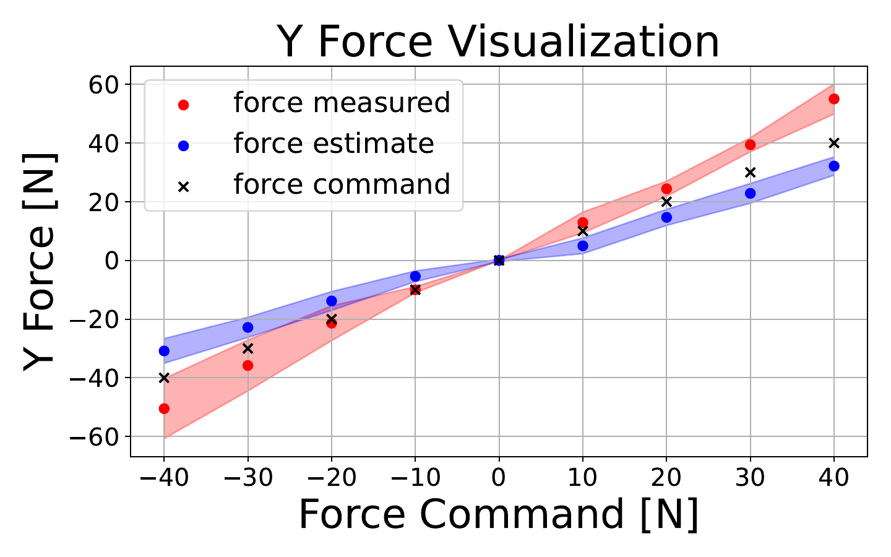
Y축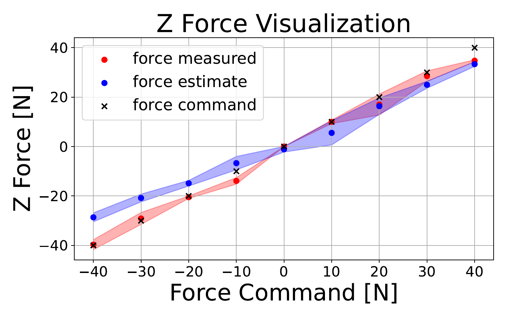
Z축부록 E. X축 및 Y축 방향의 Force 추정 정확도 평가
Force estimator를 평가하기 위해 5개의 position을 무작위로 선정하고 X축을 따라 -60 N에서 60 N 범위의 force를 가한다(본문의 그림 4과 동일함). 또한 Unitree-Z1의 하드웨어 제약으로 인해 Y축과 Z축에서는 그림 A.9와 같이 40 N 이내에서 추가로 평가한다. Sim-to-real 불일치로 인해 특히 Y축에서 부정확한 추정이 발생하지만, 현재 estimator는 본 연구에서 다루는 coarse-grained manipulation task에 충분하다고 본다. 더욱 정밀한 control을 위해 이러한 sim-to-real gap을 줄이는 것은 향후 연구에서 추가로 중점을 둘 방향 중 하나이다.
보충 영상 부록
프로젝트 페이지에서 제공하는 보충 영상 14개를 모두 수록했다. 장면 설명은 공식 프로젝트 페이지의 그룹 및 표제를 따른다.
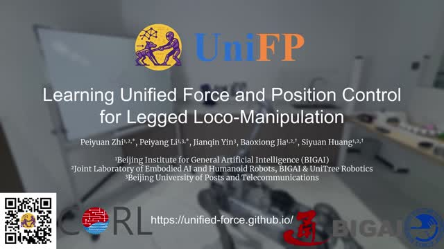
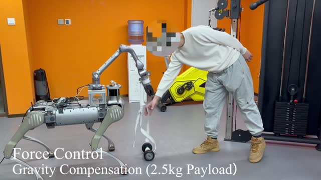
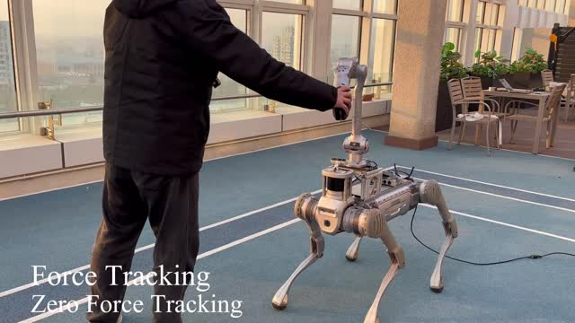
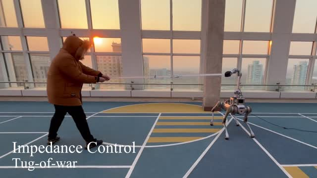
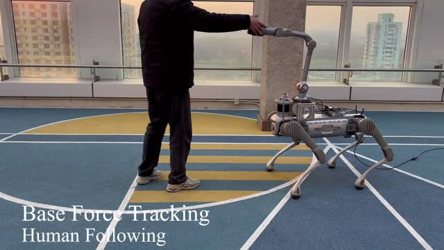
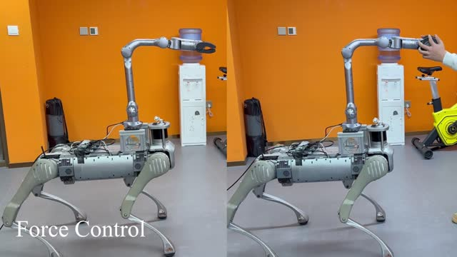
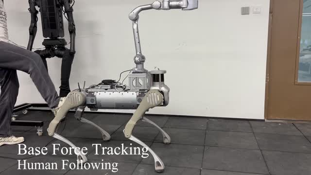
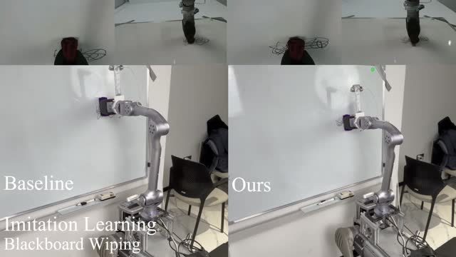
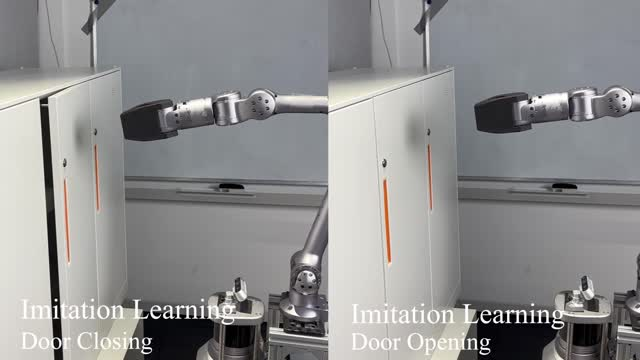
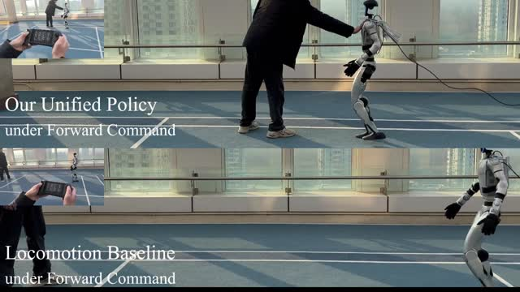
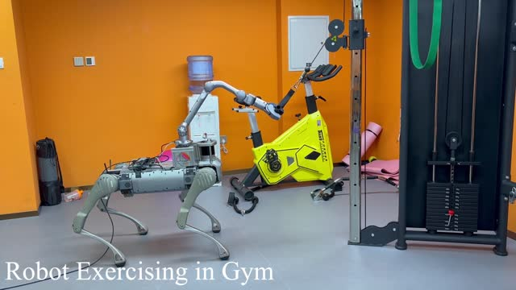
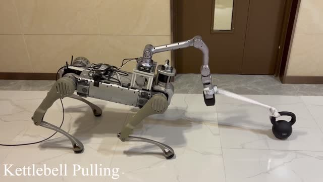
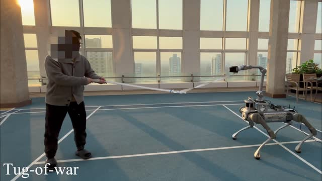
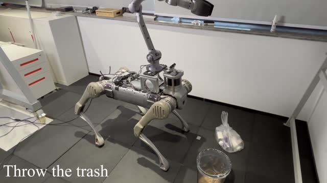
참고문헌
참고문헌 50개는 원문의 main.bbl 순서와 전체 서지 내용을 따른다.
- J.~Hwangbo, J.~Lee, A.~Dosovitskiy, D.~Bellicoso, V.~Tsounis, V.~Koltun, and M.~Hutter. Learning agile and dynamic motor skills for legged robots. Science Robotics, 4 (26): eaau5872, 2019.
- Z.~Zhuang, S.~Yao, and H.~Zhao. Humanoid parkour learning. arXiv preprint arXiv:2406.10759, 2024.
- T.~He, C.~Zhang, W.~Xiao, G.~He, C.~Liu, and G.~Shi. Agile but safe: Learning collision-free high-speed legged locomotion. arXiv preprint arXiv:2401.17583, 2024.
- D.~Hoeller, N.~Rudin, D.~Sako, and M.~Hutter. Anymal parkour: Learning agile navigation for quadrupedal robots. Science Robotics, 9 (88): eadi7566, 2024.
- J.-P. Sleiman, F.~Farshidian, and M.~Hutter. Versatile multicontact planning and control for legged loco-manipulation. Science Robotics, 8 (81): eadg5014, 2023.
- Z.~Fu, X.~Cheng, and D.~Pathak. Deep whole-body control: learning a unified policy for manipulation and locomotion. In Conference on Robot Learning, pages 138--149. PMLR, 2023.
- M.~Liu, Z.~Chen, X.~Cheng, Y.~Ji, R.~Qiu, R.~Yang, and X.~Wang. Visual whole-body control for legged loco-manipulation. The 8th Conference on Robot Learning, 2024.
- R.-Z. Qiu, Y.~Song, X.~Peng, S.~A. Suryadevara, G.~Yang, M.~Liu, M.~Ji, C.~Jia, R.~Yang, X.~Zou, et~al. Wildlma: Long horizon loco-manipulation in the wild. arXiv preprint arXiv:2411.15131, 2024.
- T.~Portela, G.~B. Margolis, Y.~Ji, and P.~Agrawal. Learning force control for legged manipulation. arXiv preprint arXiv:2405.01402, 2024.
- Z.~Zhuang, Z.~Fu, J.~Wang, C.~Atkeson, S.~Schwertfeger, C.~Finn, and H.~Zhao. Robot parkour learning. arXiv preprint arXiv:2309.05665, 2023.
- M.~Shridhar, L.~Manuelli, and D.~Fox. Perceiver-actor: A multi-task transformer for robotic manipulation. In Conference on Robot Learning (CoRL), 2023.
- C.~Chi, Z.~Xu, S.~Feng, E.~Cousineau, Y.~Du, B.~Burchfiel, R.~Tedrake, and S.~Song. Diffusion policy: Visuomotor policy learning via action diffusion. The International Journal of Robotics Research, page 02783649241273668, 2023.
- A.~Brohan, N.~Brown, J.~Carbajal, Y.~Chebotar, X.~Chen, K.~Choromanski, T.~Ding, D.~Driess, A.~Dubey, C.~Finn, et~al. Rt-2: Vision-language-action models transfer web knowledge to robotic control. arXiv preprint arXiv:2307.15818, 2023.
- O.~M. Team, D.~Ghosh, H.~Walke, K.~Pertsch, K.~Black, O.~Mees, S.~Dasari, J.~Hejna, T.~Kreiman, C.~Xu, et~al. Octo: An open-source generalist robot policy. arXiv preprint arXiv:2405.12213, 2024.
- K.~Black, N.~Brown, D.~Driess, A.~Esmail, M.~Equi, C.~Finn, N.~Fusai, L.~Groom, K.~Hausman, B.~Ichter, et~al. A vision-language-action flow model for general robot control. arXiv preprint arXiv:2410.24164, 2024.
- H.~R. Walke, K.~Black, T.~Z. Zhao, Q.~Vuong, C.~Zheng, P.~Hansen-Estruch, A.~W. He, V.~Myers, M.~J. Kim, M.~Du, et~al. Bridgedata v2: A dataset for robot learning at scale. In Conference on Robot Learning (CoRL), 2023.
- A.~Khazatsky, K.~Pertsch, S.~Nair, A.~Balakrishna, S.~Dasari, S.~Karamcheti, S.~Nasiriany, M.~K. Srirama, L.~Y. Chen, K.~Ellis, et~al. Droid: A large-scale in-the-wild robot manipulation dataset. arXiv preprint arXiv:2403.12945, 2024.
- A.~O’Neill, A.~Rehman, A.~Maddukuri, A.~Gupta, A.~Padalkar, A.~Lee, A.~Pooley, A.~Gupta, A.~Mandlekar, A.~Jain, et~al. Open x-embodiment: Robotic learning datasets and rt-x models: Open x-embodiment collaboration 0. In 2024 IEEE International Conference on Robotics and Automation (ICRA), pages 6892--6903. IEEE, 2024.
- V.~Makoviychuk, L.~Wawrzyniak, Y.~Guo, M.~Lu, K.~Storey, M.~Macklin, D.~Hoeller, N.~Rudin, A.~Allshire, A.~Handa, et~al. Isaac gym: High performance gpu-based physics simulation for robot learning. arXiv preprint arXiv:2108.10470, 2021.
- J.-P. Sleiman, F.~Farshidian, M.~V. Minniti, and M.~Hutter. A unified mpc framework for whole-body dynamic locomotion and manipulation. IEEE Robotics and Automation Letters, 6 (3): 4688--4695, 2021.
- M.~P. Polverini, A.~Laurenzi, E.~M. Hoffman, F.~Ruscelli, and N.~G. Tsagarakis. Multi-contact heavy object pushing with a centaur-type humanoid robot: Planning and control for a real demonstrator. IEEE Robotics and Automation Letters, 5 (2): 859--866, 2020.
- N.~Rudin, D.~Hoeller, P.~Reist, and M.~Hutter. Learning to walk in minutes using massively parallel deep reinforcement learning. In Conference on Robot Learning, pages 91--100. PMLR, 2022.
- G.~Pan, Q.~Ben, Z.~Yuan, G.~Jiang, Y.~Ji, J.~Pang, H.~Liu, and H.~Xu. Roboduet: A framework affording mobile-manipulation and cross-embodiment. arXiv preprint arXiv:2403.17367, 2024.
- Y.~Ma, F.~Farshidian, T.~Miki, J.~Lee, and M.~Hutter. Combining learning-based locomotion policy with model-based manipulation for legged mobile manipulators. IEEE Robotics and Automation Letters, 7 (2): 2377--2384, 2022.
- J.~Wang, J.~Rajabov, C.~Xu, Y.~Zheng, and H.~Wang. Quadwbg: Generalizable quadrupedal whole-body grasping. arXiv preprint arXiv:2411.06782, 2024.
- M.~P. Murphy, B.~Stephens, Y.~Abe, and A.~A. Rizzi. High degree-of-freedom dynamic manipulation. In Unmanned Systems Technology XIV, volume 8387, pages 339--348. SPIE, 2012.
- M.~Murooka, S.~Nozawa, Y.~Kakiuchi, K.~Okada, and M.~Inaba. Whole-body pushing manipulation with contact posture planning of large and heavy object for humanoid robot. In 2015 IEEE International Conference on Robotics and Automation (ICRA), pages 5682--5689. IEEE, 2015.
- B.~U. Rehman, M.~Focchi, J.~Lee, H.~Dallali, D.~G. Caldwell, and C.~Semini. Towards a multi-legged mobile manipulator. In 2016 IEEE International Conference on Robotics and Automation (ICRA), pages 3618--3624. IEEE, 2016.
- C.~D. Bellicoso, K.~Krämer, M.~Stäuble, D.~Sako, F.~Jenelten, M.~Bjelonic, and M.~Hutter. Alma-articulated locomotion and manipulation for a torque-controllable robot. In 2019 International conference on robotics and automation (ICRA), pages 8477--8483. IEEE, 2019.
- M.~Risiglione, V.~Barasuol, D.~G. Caldwell, and C.~Semini. A whole-body controller based on a simplified template for rendering impedances in quadruped manipulators. In 2022 IEEE/RSJ International Conference on Intelligent Robots and Systems (IROS), pages 9620--9627. IEEE, 2022.
- M.~H. Raibert and J.~J. Craig. Hybrid position/force control of manipulators. 1981.
- M.~T. Mason. Compliance and force control for computer controlled manipulators. IEEE Transactions on Systems, Man, and Cybernetics, 11 (6): 418--432, 1981.
- T.~Yoshikawa. Dynamic hybrid position/force control of robot manipulators--description of hand constraints and calculation of joint driving force. IEEE Journal on Robotics and Automation, 3 (5): 386--392, 1987.
- N.~Hogan. Impedance control: An approach to manipulation. In 1984 American control conference, pages 304--313. IEEE, 1984.
- X.~Zhang, L.~Sun, Z.~Kuang, and M.~Tomizuka. Learning variable impedance control via inverse reinforcement learning for force-related tasks. IEEE Robotics and Automation Letters, 6 (2): 2225--2232, 2021.
- Y.~Hou, Z.~Liu, C.~Chi, E.~Cousineau, N.~Kuppuswamy, S.~Feng, B.~Burchfiel, and S.~Song. Adaptive compliance policy: Learning approximate compliance for diffusion guided control. arXiv preprint arXiv:2410.09309, 2024.
- J.~de~Wolde, L.~Knoedler, G.~Garofalo, and J.~Alonso-Mora. Current-based impedance control for interacting with mobile manipulators. arXiv preprint arXiv:2403.13079, 2024.
- K.~Bousmalis, G.~Vezzani, D.~Rao, C.~M. Devin, A.~X. Lee, M.~B. Villalonga, T.~Davchev, Y.~Zhou, A.~Gupta, A.~Raju, et~al. Robocat: A self-improving generalist agent for robotic manipulation. Transactions on Machine Learning Research, 2023.
- O.~Mees, D.~Ghosh, K.~Pertsch, K.~Black, H.~R. Walke, S.~Dasari, J.~Hejna, T.~Kreiman, C.~Xu, J.~Luo, et~al. Octo: An open-source generalist robot policy. In First Workshop on Vision-Language Models for Navigation and Manipulation at ICRA 2024, 2024.
- Q.~Vuong, S.~Levine, H.~R. Walke, K.~Pertsch, A.~Singh, R.~Doshi, C.~Xu, J.~Luo, L.~Tan, D.~Shah, et~al. Open x-embodiment: Robotic learning datasets and rt-x models. In Towards Generalist Robots: Learning Paradigms for Scalable Skill Acquisition@ CoRL2023, 2023.
- J.~Yang, D.~Sadigh, and C.~Finn. Polybot: Training one policy across robots while embracing variability. arXiv preprint arXiv:2307.03719, 2023.
- H.-S. Fang, H.~Fang, Z.~Tang, J.~Liu, C.~Wang, J.~Wang, H.~Zhu, and C.~Lu. Rh20t: A comprehensive robotic dataset for learning diverse skills in one-shot. In 2024 IEEE International Conference on Robotics and Automation (ICRA), pages 653--660. IEEE, 2024.
- D.~A. Pomerleau. Alvinn: An autonomous land vehicle in a neural network. Advances in neural information processing systems, 1, 1988.
- M.~Bojarski, D.~D. Testa, D.~Dworakowski, B.~Firner, B.~Flepp, P.~Goyal, L.~D. Jackel, M.~Monfort, U.~Muller, J.~Zhang, X.~Zhang, J.~Zhao, and K.~Zieba. End to end learning for self-driving cars, 2016. URL https://arxiv.org/abs/1604.07316.
- Z.~Fu, T.~Z. Zhao, and C.~Finn. Mobile aloha: Learning bimanual mobile manipulation with low-cost whole-body teleoperation. In Conference on Robot Learning (CoRL), 2024.
- H.~Ha, Y.~Gao, Z.~Fu, J.~Tan, and S.~Song. Umi on legs: Making manipulation policies mobile with manipulation-centric whole-body controllers. arXiv preprint arXiv:2407.10353, 2024.
- Z.~He, K.~Lei, Y.~Ze, K.~Sreenath, Z.~Li, and H.~Xu. Learning visual quadrupedal loco-manipulation from demonstrations. arXiv preprint arXiv:2403.20328, 2024.
- T.~Lin, Y.~Zhang, Q.~Li, H.~Qi, B.~Yi, S.~Levine, and J.~Malik. Learning visuotactile skills with two multifingered hands. arXiv preprint arXiv:2404.16823, 2024.
- W.~Yang, A.~Angleraud, R.~S. Pieters, J.~Pajarinen, and J.-K. Kämäräinen. Seq2seq imitation learning for tactile feedback-based manipulation. In 2023 IEEE International Conference on Robotics and Automation (ICRA), pages 5829--5836. IEEE, 2023.
- J.~Schulman, F.~Wolski, P.~Dhariwal, A.~Radford, and O.~Klimov. Proximal policy optimization algorithms. arXiv preprint arXiv:1707.06347, 2017.